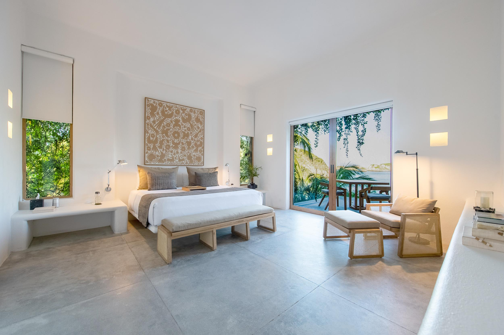
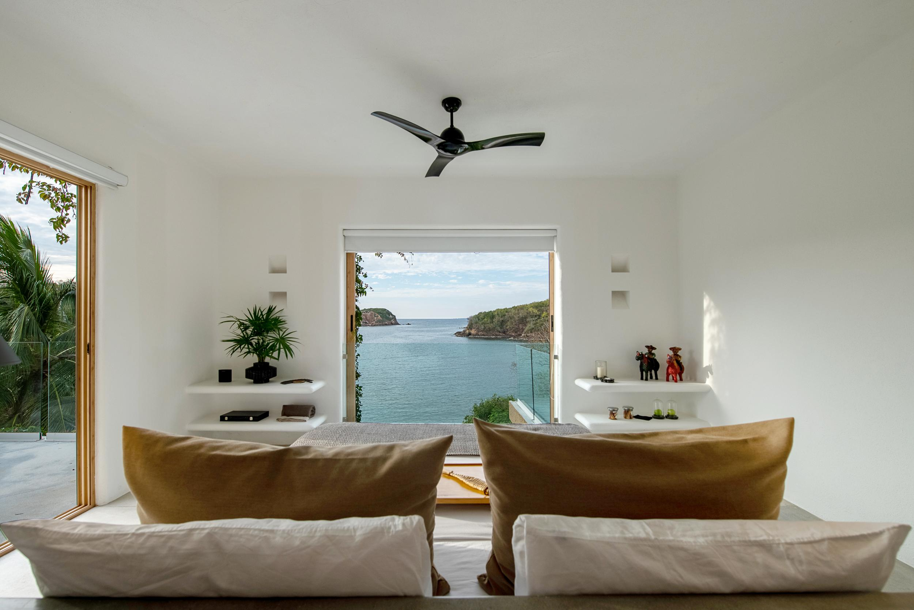
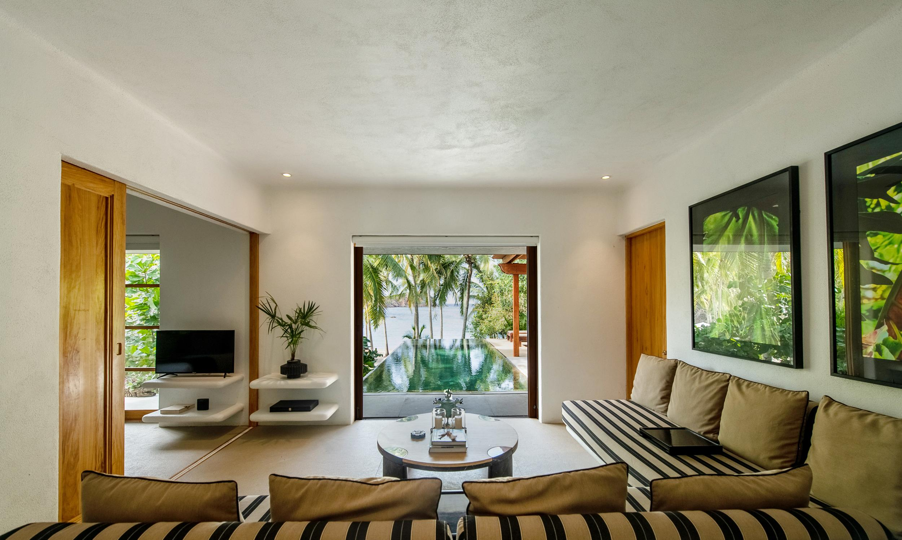
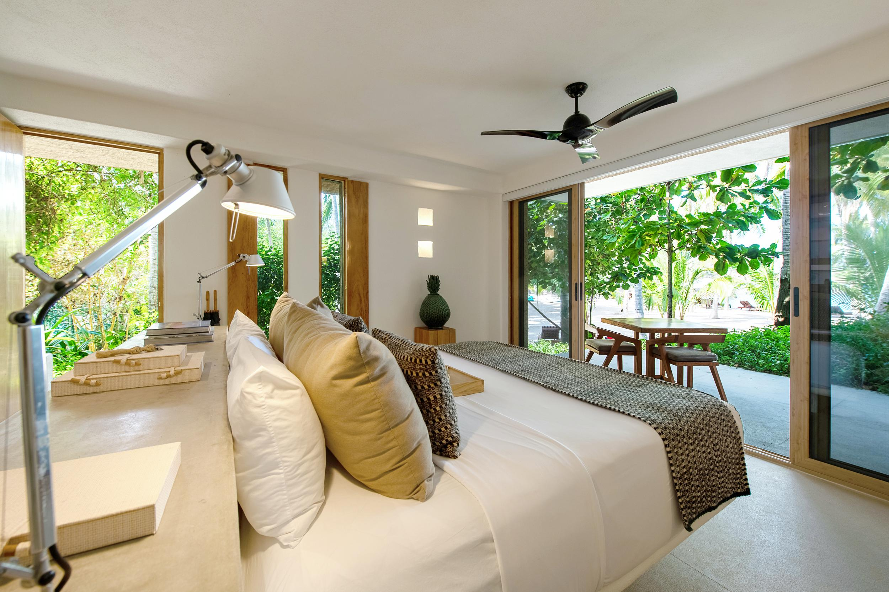
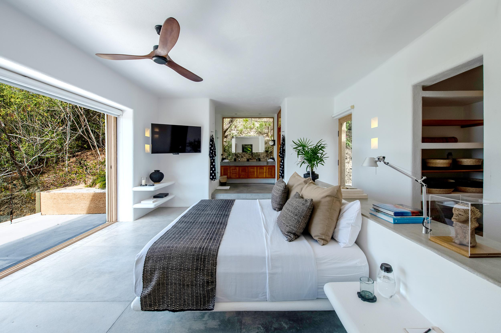

Propiedad aliada · Casa EscobedoPartner property · Casa Escobedo
Casa Tauro
Casa Tauro comparte con Casa Escobedo la misma vocación: el refugio privado, la hospitalidad cálida y el lujo sin estridencias. Dos casas, un mismo espíritu. Si tus fechas con nosotros están tomadas —o simplemente quieres descubrir otra experiencia en el Pacífico mexicano— Casa Tauro es la alternativa natural. Casa Tauro shares with Casa Escobedo the same calling: the private refuge, warm hospitality and understated luxury. Two houses, one spirit. If your dates with us are taken —or you simply wish to discover another experience on the Mexican Pacific— Casa Tauro is the natural alternative.
Ubicada en Costa Careyes, Jalisco, Casa Tauro es un espacio exclusivo sin igual, rodeado de playas de arena blanca, aguas turquesa y selva natural. Su arquitectura contemporánea de estilo mexicano moderno abraza el paisaje con albercas infinitas, amplias terrazas y las vistas más espectaculares del océano Pacífico, siempre en contacto con la naturaleza. Located in Costa Careyes, Jalisco, Casa Tauro is an unparalleled exclusive space surrounded by white-sand beaches, turquoise waters and natural jungle. Its contemporary architecture in a modern Mexican style embraces the landscape with infinity pools, vast terraces and the most spectacular views of the Pacific Ocean, always in touch with nature.
Ya sea para descansar, celebrar, practicar deportes o entregarse a la buena mesa —en pareja, en familia o con amigos—, el equipo de Casa Tauro diseña cada estancia a la medida, con todas las amenidades y un servicio personalizado que solo la Costa Alegre sabe ofrecer. Whether for rest, celebration, sports or the pleasure of the table —as a couple, with family or friends— the Casa Tauro team designs every stay to measure, with every amenity and the personalized service only the Costa Alegre knows how to offer.
La propiedadThe property
Suites Tauro, Venado, Jabalí y Conejo —cada una con cama king y terraza privada frente al mar—, alberca infinita, comedor para doce y rooftop con asadores.Tauro, Venado, Jabalí and Conejo suites —each with a king bed and private ocean-view terrace—, infinity pool, dining room for twelve and a rooftop with barbecue.
Suites Puma y Tortuga, con acceso directo a la playa, cocina, sala de estar y alberca privada bajo las palmeras.Puma and Tortuga suites, with direct beach access, kitchen, living room and a private pool under the palms.
Seis suites en total —todas con terraza privada y vista al mar— y hasta doce personas en la propiedad completa. Se renta por suite, por casa o completa: ellos diseñan la experiencia según la temporada y tu grupo. Six suites in total —all with private terrace and ocean view— and up to twelve guests across the full property. Rent by suite, by house or entire: they design the experience according to the season and your party.
ExperienciasExperiences
Expertos en experiencias gastronómicas con cocina mexicana e internacional de ingredientes locales, sirven desde el comedor con vista hasta escenarios imposibles: Experts in gastronomic experiences with Mexican and international cuisine focused on local ingredients, they serve from the view dining room to impossible settings:
- 01Cena en la playa, con la marea de fondoBeach dinner, with the tide as background
- 02Asado en el rooftop bajo las estrellasRooftop barbecue under the stars
- 03Picnic de día o picnic premium a la sombra de las palmerasDaytime picnic or premium picnic in the shade of the palms
- 04Fogata en la playa y cine bajo el cielo abiertoBeach bonfire and open-air cinema
- 05Ambiente romántico y setups privados para cada ocasiónRomantic ambiance and private set-ups for every occasion
GaleríaGallery




